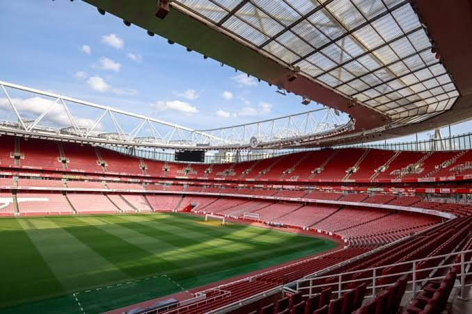
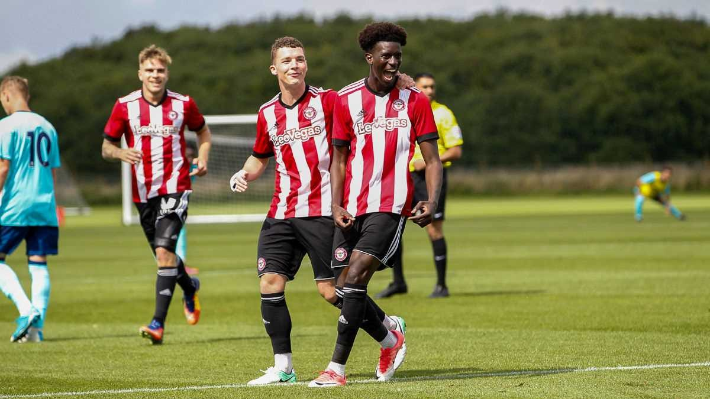
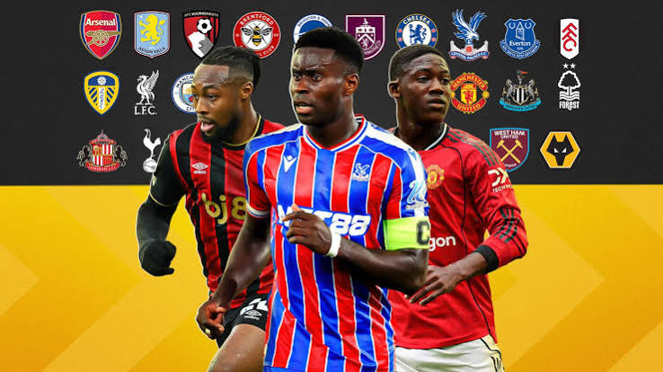

Why Low Blocks Are Winning Big Games Again
A look at how defensive-first tactics have come back into fashion, and which teams do it best.
Match breakdowns, player stories, and everything in between

A look at how defensive-first tactics have come back into fashion, and which teams do it best.

What separates an ordinary match-day crowd from a true derby atmosphere.

How top clubs are developing players earlier and why the pathway to the first team keeps changing.

A guide to separating real transfer news from speculation during the window.